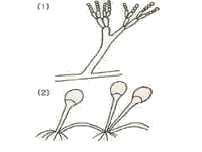

식품기사 (2009-07-26 기출문제)
1과목: 식품위생학
1. DL- 멘톨은 식품첨가물 중 어떤 종류에 해당되는가?
- 보존료
- 착색료
- 감미료
- 착향료
(정답률: 79%)

2. 다음 중 신경장애 증상을 나타내는 식중독균은?
- 보툴리늄균
- 살모넬라균
- 대장균
- 포도상구균
(정답률: 90%)
3. 고시풀(gossypol)은 어떤 유지에 함유되어 있는가?
- 미강유
- 들기름
- 면실유
- 콩기름
(정답률: 91%)
4. 리스테리아균에 의한 식중독의 예방대책이 아닌 것은?
- 살균이 안 된 우유를 섭취하지 않는다.
- 냉동식품은 냉동온도(-18℃이하) 관리를 철저하게 한다.
- 식품의 가공에 사용되는 물의 위생을 철저하게 관리한다.
- 고염도, 저온의 환경으로 세균을 사멸시킨다.
(정답률: 81%)
5. 다음 물질 중 발암성을 야기시키는 물질이 아닌 것은?
- 벤조피렌
- 트리할로메탄
- 아플라톡신
- 마비성 패류독
(정답률: 76%)
6. 콜레라에 대한 설명으로 틀린 것은?
- 주증상은 심한 설사이다.
- 내열성은 약하지만 일반 소독제에 대해서는 저항력이 강한 편이다.
- 외래 전염병으로 검역 대상전염병이다.
- 비브리오속에 속하는 세균이다.
(정답률: 76%)
7. HPLC를 이용하여 식품 중 멜라민의 정량을 분석하고자 할 때 사용하는 추출용액은? (단, 표준원액은 멜라민 표준품 50mg을 취하여 아세토니트릴ㆍ물(50:50) 혼합용액에 녹여 정확히 100mL로 한다.)
- 아세토니트릴ㆍ물(50:50) 혼합용액
- 아세토니트릴ㆍ알코올(50:50) 혼합용액
- DW 증류수
- 아세틸알코올
(정답률: 57%)
8. 식중독을 일으키는 세균과 바이러스에 대한 설명으로 틀린 것은?
- 세균은 온도, 습도, 영양성분 등이 적정하면 자체증식이 가능하다.
- 바이러스에 의한 식중독은 미량(10~100)의 개체로도 발병이 가능하다.
- 세균에 의한 식중독은 2차 감염되는 경우가 거의 없다.
- 바이러스에 의한 식중독은 일반적인 치료법이나 백신이 개발되어 있다.
(정답률: 77%)
9. 다음 중 서로 관련이 없는 것끼리 연결된 것은?
- 결핵 - 소
- 탄저 - 소, 말
- 파상열 - 양, 소
- 폐디스토마 - 담수어(붕어, 잉어)
(정답률: 66%)
10. 식품취급자의 손 소독에 가장 적합한 약제는?
- 크레졸 비누액
- 역성비누액
- 포르말린
- 승홍수
(정답률: 86%)
11. 수질 검사 중 최확수(MPN)와 가장 관계 깊은 것은?
- 경도조사
- 탁도검사
- BOD 검사
- 대장균검사
(정답률: 83%)
12. 식품에서 대장균 검사가 갖는 의의와 거리가 먼 것은?
- 분변에 의한 오염여부 판단
- 살모넬라균의 존재 가능성 타진
- 냉동식품의 오염지표
- 이질균의 존재 가능성 타진
(정답률: 70%)
13. 선어패류를 저온 저장할 경우 다른 식품에 비해서 선도유지 가능 유효시간이 짧은 이유는?
- 대장균군이 다수 부착되었기 때문
- 저온성 세균이 다수 부착되었기 때문
- 호염성 세균이 다수 부착되었기 때문
- 비브리오균이 다수 부착되었기 때문
(정답률: 82%)
14. 식품의 방사선 살균에 대한 설명으로 틀린 것은?
- 침투력이 강하므로 포장 용기 속에 식품이 밀봉된 상태로 살균 할 수 있다.
- 조사 대상물의 온도 상승 없이 냉살균(cold sterilization)이 가능하다.
- 감마선을 사용함으로서 안정성 문제가 해결되었다.
- 살균력이 가장 강한 것은 감마선이다.
(정답률: 63%)
15. 식품의 보존료로서 갖추어야 할 이상적인 필수조건이 아닌 것은?
- 색깔이 아름다운 것
- 산이나 알칼리에 안정한 것
- 무미, 무취, 무색인 것
- 독성이 없고, 값이 싼 것
(정답률: 93%)
16. 소독제와 소독시 사용하는 농도의 연결이 틀린 것은?
- 석탄산 : 3~5% 수용액
- 승홍수 : 0.1% 수용액
- 알코올 : 36% 수용액
- 과산화수소 : 3%수용액
(정답률: 92%)
17. 사람에 대한 경구치사량(성인) 기중 중 극독성인 것은?
- 15 g/kg
- 5 ~ 15 g/kg
- 50 ~ 500 mg/kg
- 5 ~ 50 mg/kg
(정답률: 70%)
18. HACCP 도입시 화학적위해요소와 관련식품의 연결이 틀린 것은?
- aflatoxin - 옥수수, 땅콩
- prion - 소, 양 등의 식육제품
- ciguatera - 버섯류
- 항생제 - 식육, 양식어류
(정답률: 65%)
19. 식중독 역학조사의 단계로 옳은 것은?
- 검병조사 - 원인식품 추구 - 원인물질 검사
- 검병조사 - 원인물질 검사 - 원인식품 추구
- 원인식품 추구 - 원인물질 검사 - 검병조사
- 원인물질 검사 - 원인식품 추구 - 검병조사
(정답률: 76%)
20. 체내에서 흡수되어 단백질의 -SH기와 결합함으로써 단백질의 기능이나 효소의 작용을 저해하는 농약은?
- 금속제
- 유기불소제
- 유기염소제
- 유기인제
(정답률: 27%)
2과목: 식품화학
21. 거품과 관련된 설명 중 틀린 것은?
- 맥주와 샴페인은 가압하에서 탄산가스를 다량 용해시킨 것이다.
- 약체 중에 공기와 같은 기체가 분산된 것이 거품이다.
- 빵이나 카스텔라는 거품을 이용하여 부드러운 식감을 지나게 한다.
- 거품을 제거하기 위해서는 거품의 표면장력을 높여 주어야 한다.
(정답률: 82%)
22. 다음 당류 중 이눌린(inulin)의 구성 단위는?
- 포도당(glucose)
- 만노오스(mannose)
- 갈락토오스(galactose)
- 과당(fructose)
(정답률: 62%)
23. 효소에 의한 식품의 변색현상은?
- 김이 저장 중 고유한 색깔을 잃는 것
- 새우나 게를 가열하면 붉은 색으로 변하는 것
- 사과를 잘라 공기 중에 두었을 때 갈변하는 것
- 안토시아닌을 가진 채소나 과일을 통조림에 담으면 회색을 나타내는 것
(정답률: 79%)
24. 밀가루의 이화학적 특성으로 옳은 것은?
- 밀가루의 단백질은 글루타민 이다.
- 라이신(lysine), 메티오닌(methionine) 등의 필수아미노산이 부족하다.
- 표백제의 사용으로 카로티노이드 계통의 색소가 제거되면 안토시아닌계 색소만 남는다.
- 박력분은 단백질의 함량이 12% 이상이다.
(정답률: 66%)
25. 포르피린 링(porphyrin ring) 구조 안에 Mg2⁺을 함유하고 있는 색소 성분은?
- 미오글로빈
- 헤모글로빈
- 클로로필
- 헤모시아닌
(정답률: 74%)
26. KOH를 첨가하였을 때 글리세롤을 형성하지 못하는 지방질은?
- 인지질
- 중성지질
- 트리팔미틴
- 라이코펜
(정답률: 68%)
27. 유화제는 한 분자 내에 친수성기와 소수성기를 같이 지니고 있다. 다음 중 상대적으로 소수성이 큰 것은?
- -COOH
- -NH2
- -CH3
- -OH
(정답률: 37%)
28. 육의 숙성과정 중에 일반적으로 발생하는 문제점이라고 보기 어려운 것은?
- 육색의 변화
- 육단백질의 변화
- 수분의 손실로 인한 감량
- 미생물의 번식
(정답률: 33%)
29. 식품등의 표시기준에 의거하여 영양성분이 “단백질 10g, 유기산 5g, 식이섬유 5g, 지방 3g" 으로 표시된 식품의 열량은 얼마인가?
- 67 kcal
- 77 kcal
- 82 kcal
- 92 kcal
(정답률: 55%)
30. 비뉴턴 유체의 특성을 가진 식품은?
- 우유
- 교질용액
- 50% 설탕용액
- 올리브유
(정답률: 59%)
31. 탄수화물의 대사과정에서 필요한 효소들의 반응에서 필수적인 조효소를 구성하는 성분의 비타민으로, 체내에서 합성이 되지 않으므로 식이과정을 통하여 섭취되어야 하는 것은?
- 비타민A
- 비타민B
- 비타민C
- 비타민E
(정답률: 59%)
32. 감자나 고구마의 특성 및 성분에 대한 설명으로 옳은 것은?
- 군고구마가 감자보다 더 단맛을 갖는 이유는 β-아밀라아제의 작용 때문이다.
- 고구마와 감자는 칼륨(K)이 많이 함유되어 있는 산성식품이다.
- 고구마가 상처를 입어 갈변이나 흑변으로 색이 변화되는 것은 이포메인 (ipomain) 때문이다.
- 감자 중에 함유된 독성분의 하나인 사포닌은 콜린 에스터라아제의 활성을 억제시키는 효과를 갖고 있다.
(정답률: 47%)
33. 뇌조직에서 고급지방산과 에스테르 결합으로 존재하는 것은?
- 포스포이노시타이드(phosphoinositide)
- 시토스테롤(sitosterol)
- 스티그마스테롤(stigmasterol)
- 콜레스테롤(cholesterol)
(정답률: 40%)
34. 저칼로리 감미료로 성인병뿐만 아니라 치아관리에 효과적인 탄수화물 유도체가 아닌 것은?
- 솔비톨(sorbitol)
- 자일리톨(xylitol)
- 만니톨(mannitol)
- 이노시톨(inositol)
(정답률: 42%)
35. 미생물의 침입을 막는 역할을 하며 계란 껍질을 덮고 있는 물질은?
- cuticle
- lysozyme
- chalaza
- air cell
(정답률: 69%)
36. 계란의 물리적인 성질에 대한 설명으로 틀린 것은?
- 난백단백질은 거품 생성 능역이 높으나 기름이 첨가되면 거품성은 현저히 떨어진다.
- 난황 중에 존재하는 레시틴은 유화력을 높이는 성질을 갖고 있다.
- 오브알부민은 불안정한 콜로이드 용액의 안정성을 증가 시키는 성질을 갖고 있다.
- 난황은 동결하거나 다량의 식염을 첨가하여도 응고 되지 않는다.
(정답률: 74%)
37. 유체의 특성에 있어서 전단속도의 증가에 따라 전단응력의 증가폭이 점차적으로 증가하는 유체는?
- 뉴톤(Newton) 유체
- 빙햄플라스틱(Bingham plastic) 유체
- 슈도플라스틱(Pseudoplastic) 유체
- 딜라턴트(Dilatant) 유체
(정답률: 51%)
38. 효소들의 역할이 옳게 연결된 것은?
- ascorbate oxidase : 비타민 C를 생성한다.
- polyphenol oxidase : 갈변이 억제 된다.
- chlorophyllase : 클로로필을 가수분해한다.
- bromelain : 단백질 분자간의 결합이 이루어진다
(정답률: 68%)
39. 고등어 보관을 목적으로 염장할 때 고등어의 수분활성도는 어떻게 변하는가?
- 감소한다.
- 증가한다.
- 일정하다.
- 감소했다가 증가한다.
(정답률: 77%)
40. 간고등어와 같은 제품은 고등어 속의 ATP가 다른 물질로 변화되면서 가장 맛있는 상태에서 소금으로 절여 맛있는 상태를 유지하는 것이 그 특징이다. 다음 중 어떤 성분들이 많이 있을 때 맛이 좋겠는가?
- ATP와 ADP
- AMP와 이노신(Inosine)
- 하이포잔틴(Hypoxanthine)과 잔틴(Xanthine)
- 잔틴(Xanthine)과 뇨산(Uric acid)
(정답률: 48%)
3과목: 식품가공학
41. 다음 중 두부 응고제는?
- 이산화염소
- 과산화염소
- 염화칼슘
- 브롬산칼륨
(정답률: 87%)
42. 제분시 자력분리기가 사용되는 공정은?
- 운반
- 정선
- 세척
- 탈수
(정답률: 79%)
43. 산분해간장용 원료로 주로 사용되는 것은?
- 감자
- 돼지감자
- 탈지대두
- 고구마
(정답률: 80%)
44. 과일을 lye peeling 할 때 가장 적합한 조건은?
- 1~3% NaOH 용액 90~95℃에서 1~2분간 담근 후 물로 씻는다.
- 3~5% NaOH 용액 20℃에서 1~2분간 담근 후 물로 씻는다.
- 5~6% NaOH 용액 70~80℃에서 5분간 담근 후 물로 씻는다.
- 7~8% NaOH 용액 60~75℃에서 1~2분간 담근 후 물로 씻는다.
(정답률: 35%)
45. “탈검, 탈산, 탈색, 탈취” 공정과 관계가 있는 것은?
- 유지의 정제
- 유지의 추출
- 소맥분의 정제
- 경화유 제조
(정답률: 77%)
46. 식품가공에 사용되는 고주파에 대한 설명으로 틀린 것은?
- 고주파는 파장의 길이에 따라 단파, 초단파, 극초단파로 구분된다.
- 주파수가 높은 전파일수록 파장은 짧다.
- 식품에 사용되는 주파수는 물을 포함한 식품성분과 금속을 통과한다.
- 전자레인지는 고주파의 가열원리를 이용한 것이다.
(정답률: 63%)
47. 과채류를 블랜칭(blanching)하는 목적과 가장 거리가 먼 것은?
- 조직을 유연하게 한다.
- 박피를 용이하게 한다.
- 산화효소를 불활성화시킨다.
- 향미성분을 보호한다.
(정답률: 84%)
48. 육연화제에 사용되는 효소로 부적합한 것은?
- 파파인(papain)
- 피신(ficin)
- 브로멜린(bromelin)
- 리파아제(lipase)
(정답률: 75%)
49. 젤리화에 가장 적합한 당, 산, 펙틴량의 비율(%)은??
- 50 : 0.3 : 1.5
- 50 : 0.5 : 2.0
- 60 : 0.3 : 1.5
- 60 : 0.5 : 2.0
(정답률: 61%)
50. 유가공업에서 가장 널리 사용되는 분유제조 방법은?
- 냉동건조
- Drum 건조
- Foam-mat 건조
- 분무건조
(정답률: 83%)
51. 계란 중의 콜레스테롤 함량을 낮추는 방법으로 부적합한 것은?
- 난황으로부터 콜레스테롤을 용매 추출한다.
- 사료의 배합을 조절하여 계란에 콜레스테롤 함량이 낮도록 한다.
- 계란을 가열처리 한다.
- 난백과 난황을 분리하여 난황에 있는 지방을 제거한다.
(정답률: 74%)
52. CA 저장방법은 신선 식품의 저장에 많이 사용된다. 사과를 CA 저장하려면 다음 중 어떤 조작이 필요한가?
- 상온을 유지한다.
- 공기 중 산소의 대부분을 N2가스로 치환하여 산소 함량을 낮게 유지한다.
- 사과를 개별적으로 유연성 필름(film)으로 포장한다.
- 곤충의 서식을 막기 위하여 주기적으로 훈증처리 한다.
(정답률: 78%)
53. 5℃에서 저장된 양배추 2000Kg의 호흡열 방출에 의해 냉장고 안에 제공되는 냉동부하는? (단, 5℃에서 양배추의 저장을 위한 열방출은 63W/ton 이다.)
- 28W
- 63W
- 100W
- 126W
(정답률: 59%)
54. B. stearothermophilus(z=10℃)를 121.1℃에서 열처리하여 균농도를 1/10000로 감소시키는데 15분이 소요되었다. 살균온도를 127℃로 높여 15분간 살균한다면 균의 치사율은 몇 배 커지겠는가?
- 3.89배
- 4.34배
- 5.45배
- 6.25배
(정답률: 30%)
55. 유지방 분리를 방지하기 위하여 처리하는 공정은?
- 청징
- 살균
- 균질화
- 냉장
(정답률: 82%)
56. 동결란 제조시 노른자는 젤화가 일어나 품질이 저하된다. 이를 방지하기 위하여 첨가되는 물질이 아닌 것은?
- 소금
- 설탕
- 구연산
- 글리세린
(정답률: 45%)
57. 유지의 경화에 대한 설명으로 틀린 것은?
- 불포화지방산을 포화지방산으로 만드는 것이다
- 쇼트닝, 마가린 등이 대표적인 제품이다.
- 산화와 풍미변패에 대한 저항력을 높여 준다.
- 질소첨가반응으로 융점을 낮추어준다.
(정답률: 74%)
58. 햄을 가공할 때 정형한 고기를 혼합염(식염, 질산염 등)으로 염지하지 않고 가열하면 어떻게 되는가?
- 결착성과 보수성이 발현된다.
- 탄성을 가지게 된다.
- 형이 그대로 보존된다.
- 조직이 뿔뿔이 흩어진다.
(정답률: 87%)
59. 알파화 전분에 대한 설명으로 옳은 것은?
- 알파화 전분은 냉수에도 쉽게 분산되나 가열과정을 거쳐야 사용할 수 있다.
- 알파화 전분을 드럼 건조기로 제조시 지나치게 가열하면 입자의 조각화가 일어나 수분결합력이 낮아진다.
- 알파화 전분제조시 분무 호화방법은 전분입자를 충분히 팽윤시키는 장점은 있지만 입자의 손상이 크다.
- 알파화 전분은 천연전분보다 정성이 강하고 투명한 젤을 형성한다.
(정답률: 53%)
60. 삼투압원리를 적용하여 가공한 식품이 아닌 것은?
- 자반고등어
- 잼
- 오이피클
- 황태
(정답률: 71%)
4과목: 식품미생물학
61. 다음 그림 (1), (2)의 곰팡이 속명은?

- (1) Penicillium, (2) Aspergillus
- (1) Aspergillus, (2) Mucor
- (1) Penicillium, (2) Rhizopus
- (1) Aspergillus, (2) Penicillium
(정답률: 70%)
62. 탄화수소의 자화성이 가장 강하며 사료효모제조 균주로 사용되는 것은?
- Candida guillermondi
- Candida tropicalis
- Hansenula anomala
- Pichia membranaefaciens
(정답률: 71%)
63. 맥주 발효시 상면발효효모와 하면발효효모의 예로 옳은 것은?
- 상면발효효모- Saccharomyces carlsbergensis
하면발효효모 - Saccharomyces cerevisiae - 상면발효효모 - Saccharomyces cerevisiae
하면발효효모- Saccharomyces carlsbergensis - 상면발효효모 - Saccharomyces rouxii
하면발효효모 - Saccharomyces cerevisiae - 상면발효효모 - Saccharomyces ellipsoideus
하면발효효모 - Saccharomyces cerevisiae
(정답률: 81%)
64. 젖산균의 특징으로 옳은 것은?
- catalase 양성
- 그램 양성균
- 호기성균
- 내성포자 형성
(정답률: 59%)
65. 그램양성균의 세포벽 성분은?
- peptidoglycan, teichoic acid
- lipopolysaccharidw, protein
- polyphosphate, calcium dipicholinate
- lipoprotein, phospholipid
(정답률: 76%)
66. 미생물에서 협막과 점질층의 구성물이 아닌 것은?
- 다당류
- 폴리펩타이드
- 지질
- 핵산
(정답률: 72%)
67. 다음 중 가장 광범위하게 거의 모든 미생물에 대하여 비선택적으로 유사한 정도의 항균작용을 가지는 것은?
- sorbic acid
- propionic acid
- dehydroacetic acid
- benzoic acid
(정답률: 60%)
68. 내당성, 내염성 효모로서 당이나 염분이 많은 곳에서 잘 검출되며, 특히 진한 오렌지 주스나 벌꿀 등에 발육하여 변패시키는 효모는?
- Saccharomyces 속
- Saccharomycoides 속
- Pichia 속
- Zygosacharomyces 속
(정답률: 59%)
69. 돌연변이원에 대한 설명 중 틀린 것은 ?
- 아질산은 아미노기가 있는 염기에 작용하여 아미노기를 이탈시킨다.
- NTG(N-Methyl-N′-nitro-nitrosoguanidine)는 DNA 중의 구아닌(guanine) 잔기를 메틸(methyl)화 한다.
- 알킬(alkyl)화제는 특히 구아닌(guanine)의 7위치를 알킬(alkyl)화 한다.
- 5-Bromouracil(5-BU)은 보통 엔올(enol)형으로 아데닌(adenine)과 짝이 되나 드물게 게토(keto)형으로 되어 구아닌(guanine)과 짝을 이루게 된다.
(정답률: 73%)
70. 60분 마다 분열하는 세균의 최초 세균수가 5개일 때 3시간 후의 세균수는?
- 90개
- 40개
- 120개
- 240개
(정답률: 80%)
71. 방출까지의 바이러스 증식 단계가 옳은 것은?
- 부착-주입-단백외투 합성-핵산 복제-조립
- 주입-부착-단백외투 합성-핵산 복제-조립
- 부착-주입-핵산 복제-단백외투 합성 - 조립
- 주입-부착-조립-핵산 복제-단백외투 합성
(정답률: 64%)
72. 채소류가 건조곡물에 비해 세균에 의한 부패가 일어나기 쉬운 이유에 대한 설명으로 틀린 것은?
- 수분활성도가 높다.
- 자유수 함량이 낮다.
- 수확하는 과정에서 손상되기 쉽다.
- 산도가 낮다.
(정답률: 66%)
73. 유전자의 프로모터(promoter)의 조절 부위 혹은 조절 단백질의 활성에 변이가 생겼을 때 일어나는 돌연변이체는?
- 영양요구 돌연변이체(auxotrophic mutant)
- 조절 돌연변이체(regulatory mutant)
- 대사 돌연변이체(metabolic mutant)
- 내성 돌연변이체(resistant mutant)
(정답률: 84%)
74. 효모에 대한 설명으로 틀린 것은?
- 곰팡이와 같이 자낭균류, 담자균류 및 불완전균류로 분류한다.
- 세포벽은 글루칸, 만난 및 키틴 같은 다당류가 주성분이다.
- 증식은 주로 유성적인 출아법에 의한다.
- 대부분 곰팡이보다 대사활성이 높고 성장 속도가 빠르다.
(정답률: 48%)
75. 곰팡이에 대한 설명으로 틀린 것은?
- 곰팡이는 주로 포자에 의해서 번식한다.
- 곰팡이의 포자에는 유성포자와 무성포자가 있다.
- 곰팡이의 유성포자에는 포자낭포자, 분생포자, 후막포자, 분열자 등이 있다.
- 포자는 적당한 환경 하에서는 발아하여 균사로 성장하며 또한 균사체를 형성한다.
(정답률: 76%)
76. 발효에 관여하는 미생물에 대한 설명 중 틀린 것은?
- 글루타민산 발효에 관여하는 미생물은 주로 세균이다.
- 당질은 원료로 한 구연산 발효에는 주로 곰팡이를 이용한다.
- 항생물질 스트렙토마이신(streptomycin)의 발효 생산은 주로 곰팡이를 이용한다.
- 초산 발효에 관여하는 미생물은 주로 세균이다.
(정답률: 46%)
77. 자육복제기능을 가지며, 유전자 재조합에서 목적 DNA 조각을 숙주세포의 DNA 내로 도입시키기 위하여 사용하는 매개체는?
- 프라이머(primer)
- 벡터(vector)
- 마커(marker)
- 중합효소(polymerase)
(정답률: 67%)
78. 다음 중 그램양성균은?
- Escherichia coli
- Erwinwa carotovora
- Pseudomonas aeruginosa
- Streptococcus lactis
(정답률: 65%)
79. Acetobacter 속이 주요 미생물로 작용하는 발효식품은?
- 고추장
- 청주
- 식초
- 김치
(정답률: 74%)
80. 독버섯의 유독성분에 대한 설명으로 틀린 것은?
- Muscaridine : 위경련, 구토, 설사증상을 나타낸다.
- Neurine : LD50 90 mg/Kg 독성으로 호흡곤란, 경련, 마비증상을 보인다.
- Muscarine : 3~5mg의 피하주사나 0.5g 경구투여 할 경우 사망한다.
- Phaline : 용혈작용이 있다.
(정답률: 48%)
5과목: 생화학 및 발효학
81. 클로렐라에 대한 설명 중 틀린 것은?
- 햇빛을 에너지원으로 한다.
- 호기적으로 배양한다.
- CO2는 탄소원으로 사용치 않고 당을 탄소원으로 사용한다.
- 균체는 식품으로서 영양가가 높다.
(정답률: 76%)
82. 유기산 발효 중 직접산화발효가 아닌 것은?
- Acetic acid 발효
- 5-ketogluconic acid 발효
- Gluconic acid 발효
- Fumaric acid 발효
(정답률: 45%)
83. glutamic acid 발효 시 penicillin을 첨가하는 주된 이유는?
- 잡균의 오염방지를 위하여
- 원료당의 흡수를 증가시키기 위하여
- 당으로부터 glutamic acid 생합성 경로에 있는 효소반응을 촉진시키기 위하여
- 균체 내에 생합성 된 glutamic acid의 균체 밖으로의 이동을 위한 막투과성을 높이기 위하여
(정답률: 71%)
84. glucose의 부제 탄소 원자수와 존재할 수 있는 이성체의 수의 연결이 옳은 것은?
- 1, 2
- 2, 4
- 3, 8
- 4, 16
(정답률: 42%)
85. 핵산의 생합성에 필요한 당을 공급해 주는 과정은?
- TCA cycle
- EMP scheme
- Pentose phosphate pathway
- Glyoxylate Pathway
(정답률: 51%)
86. 정상형 젖산발효(homo lactic acid fermentation)에서 포도당(glucose) 1kg 에 의해 생성되는 젖산의 양은?
- 500g
- 1000g
- 1500g
- 2000g
(정답률: 54%)
87. 산업폐수의 처리방법 중 호기적 처리법인 것은?
- 가스발효법
- 산발효법
- 소화발효법
- 활성오니법
(정답률: 76%)
88. Fusel oil의 주요 성분이 아닌 것은?
- isoamyl alcohol
- isobutyl alcohol
- methyl alcohol
- n-propyl alcohol
(정답률: 70%)
89. 다음 중 n-Paraffin을 원료로 하여 유지를 생산하는 세균은?
- Lipomyces 속
- Rhodotorula 속
- Nocardia 속
- Candida 속
(정답률: 31%)
90. 맥아즙 자비(wort boiling)의 목적이 아닌 것은?
- 맥아즙의 살균
- 단백질의 침전
- 효소작용의 정지
- pH의 상승
(정답률: 64%)
91. 단식으로 인해 저탄수화물 섭취를 할 경우 나타나는 현상이 아닌 것은?
- 저장 글리코겐 양이 감소한다.
- 뇌와 말초조직은 대체 에너지원으로 포도당을 이용한다.
- 혈액의 pH가 낮아진다.
- 간은 과량의 acetyl-CoA를 Ketone체로 만든다.
(정답률: 75%)
92. ergosterol이 자외선에 의해 변하는 물질의 이름은?
- 비타민 D2
- 비타민 B2
- 비타민 E
- 비타민 B6
(정답률: 77%)
93. Streptomyces aureus 5′-phosphodiesterase에 의해 직접 생성되지 않는 뉴클레오티드는?
- 5′-AMP
- 5′-IMP
- 5′-GMP
- 5′-UMP
(정답률: 29%)
94. 주정 제조 원료 중 당화작용이 필요한 것은?
- 고구마
- 당밀
- 사탕수수
- 사탕무
(정답률: 62%)
95. 다음 중 조작형태에 따른 발효형식의 분류에 해당되지 않는 것은?
- 회분배양
- 액체배양
- 유가배양
- 연속배양
(정답률: 61%)
96. 항산화작용을 하여 산소로부터 세포막을 보호하는 비타민은?
- 비타민 A
- 비타민 B
- 비타민 D
- 비타민 E
(정답률: 78%)
97. 발효장치 중 기계적인 교반에 의해 산소가 공급되는 통기교반형 배양장치가 아닌 것은?
- Air-lift형 발효조
- 표준형 발효조
- Waldhof형 발효조
- Vogelbusch형 발효조
(정답률: 36%)
98. 다음 중 DNA 염기에 변화를 일으키는 물질이 아닌 것은?
- Nitrosoamine
- Nitrogen mustard
- Ammonium phosphate
- Dimethylnitrosamine
(정답률: 62%)
99. DNA의 함량은 260nm의 파장에서 자외선의 흡광 정도로 측정할 수 있다. 이러한 흡광은 DNA의 구성성분 중 어느 물질의 성질에 기원한 것인가?
- 염기(base)
- 인산결합
- 리보오스(ribose)
- 데옥시리보오스(deoxyribose)
(정답률: 62%)
100. 사람과 원숭이가 비타민 C를 합성하지 못하는 이유는?
- 장내 세균에 의해 방해받기 때문이다.
- L-gulono-oxidase 효소가 없기 때문이다.
- avidin 단백질이 비오틴과 결합하여 합성을 방해하기 때문이다.
- 세포에 합성을 방해하는 항생물질이 있기 때문이다.
(정답률: 73%)